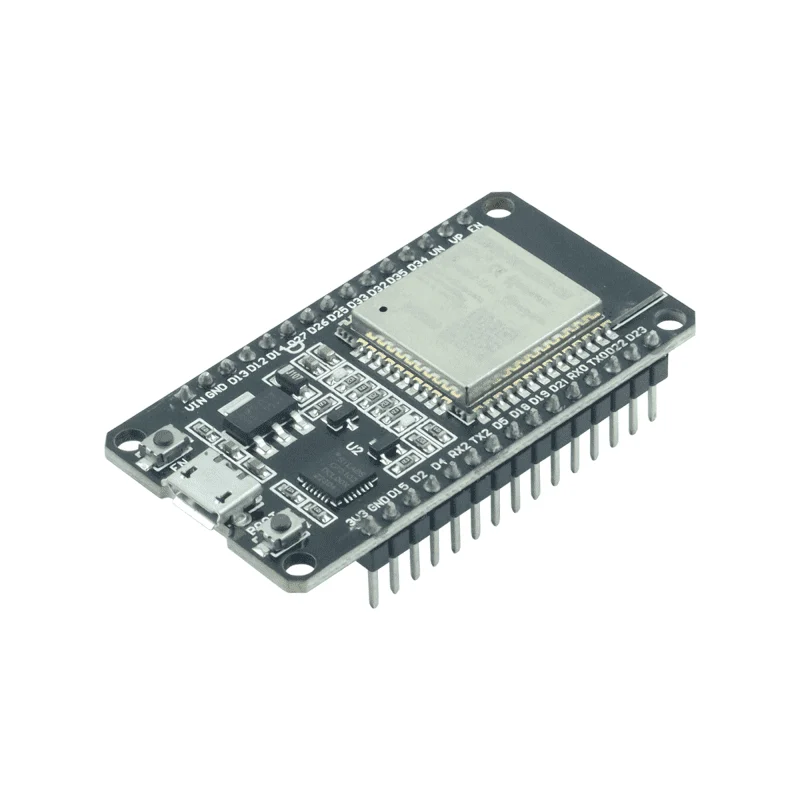
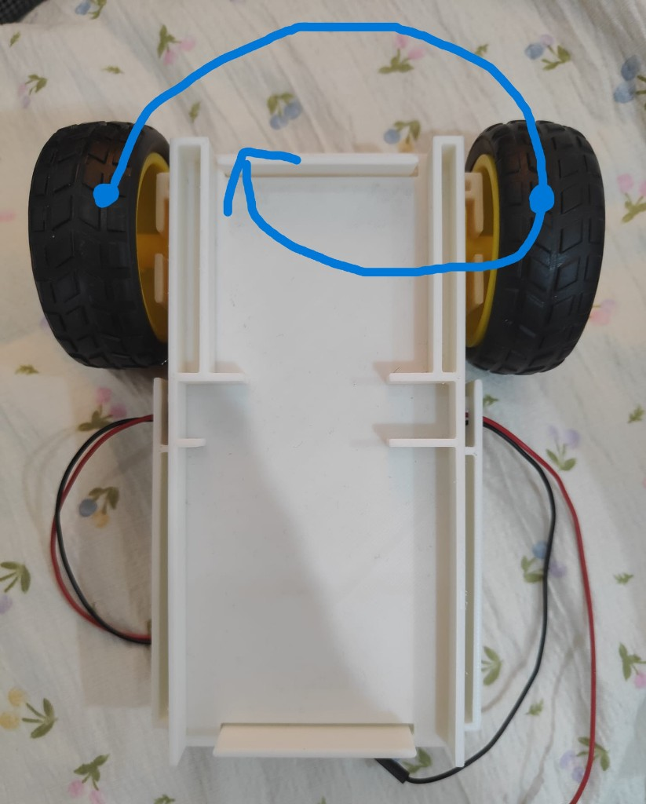
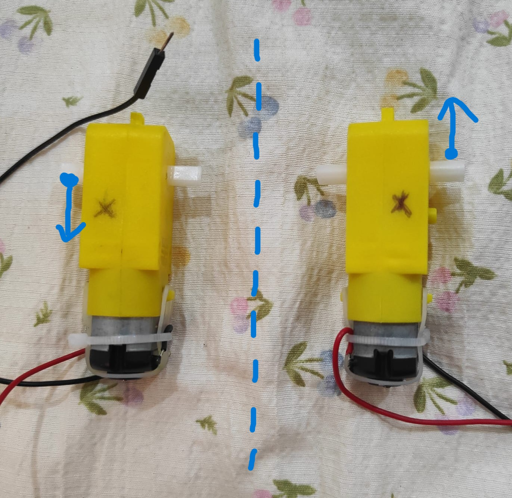
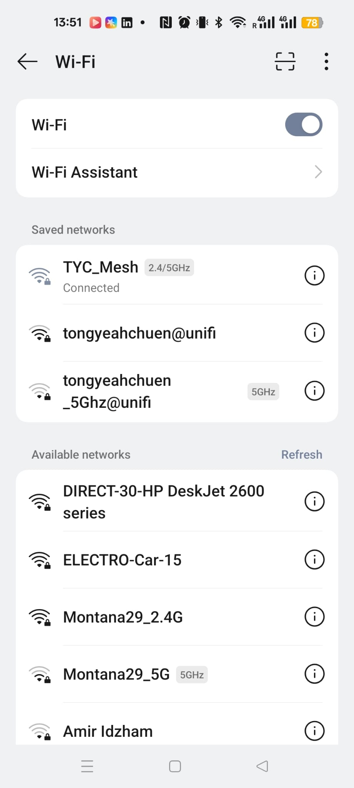

Pins, USB upload, Arduino IDE.
3.1 Meet the ESP32
A tiny computer with Wi-Fi
The black board on your car is an ESP32. Think of it as a pocket-sized computer. It reads your code, then turns pins on and off so the motors move.
If you have used an Arduino before, this will feel familiar. Both have labelled pins. Both run a program you upload. Both can blink an LED or drive a motor.
The big extra on the ESP32 is built-in Wi-Fi. A classic Arduino usually needs an extra add-on for that. Your ESP32 can open its own tiny hotspot so a phone can talk to the car.
You program it in the Arduino IDE — the same app many of you already used. That is why digitalWrite looks like Arduino code.
Your board

The silver shield is the radio. No extra Wi-Fi board needed.
3.2 Tool 1 · digitalWrite
Tell a pin HIGH or LOW
If you have used Arduino before, this line will look familiar. It is how the ESP32 turns a motor pin on or off. Digital means the pin can only be one of two values: HIGH or LOW. Write means you are setting that value, not reading it.
The correct pins are already named for you: AIN1, AIN2, BIN1, and BIN2. You type the name, not a raw number.
Syntax
digitalWrite(pin, value);
Only two states: HIGH or LOW. No in-between.
You are setting the pin, like flipping a switch.
Which pin? Today that is AIN1, AIN2, BIN1, or BIN2.
HIGH (on / 1) or LOW (off / 0).
digitalWrite(4, HIGH); // pin 4 becomes HIGH digitalWrite(4, LOW); // pin 4 becomes LOW digitalWrite(AIN2, HIGH); // named pin AIN2 becomes HIGH digitalWrite(BIN1, LOW); // named pin BIN1 becomes LOW
Syntax
if (condition) { // run this when the condition is true } else if (otherCondition) { // run this when the first was false, but this is true } else { // run this when none of the above were true }
In applyDirection the condition looks like d == UP, d == DOWN, d == LEFT, or d == RIGHT.
3.3 Tool 2 · if statements
Choose what happens next
A conditional is a fork in the road. The program checks a question, then picks one path.
Real life: if it is raining, take an umbrella. Else if it is sunny, take sunglasses. Else, just go.
In code, == means “is equal to”. Your function receives a direction d. You ask: is d UP? Then write the UP pins. Is it DOWN? Write the DOWN pins. Same for LEFT and RIGHT. If it is none of those, stop both motors.
Only one of those blocks runs. The first true condition wins, then the rest are skipped.
3.4 Motor driver code
Write applyDirection
Now put both tools together. The top line is already written. Start after the comment. Do not edit the code above or below the comments.
This is not the correct answer. It is only a starter template. Copy the pattern, then keep going for LEFT, RIGHT, and stop. Test on your car and change HIGH / LOW until each move is right.
Unzip the folder. Open electro_bootcamp.ino in the Arduino IDE. Write your directions in apply_direction.h, then upload to the ESP32.
void applyDirection(Dir d) { currentDir = d; //Start writing code here, DO NOT edit the above code! if (d == UP) { digitalWrite(AIN1, HIGH); digitalWrite(AIN2, LOW); digitalWrite(BIN1, HIGH); digitalWrite(BIN2, LOW); } else if (d == DOWN) { digitalWrite(AIN1, LOW); digitalWrite(AIN2, HIGH); digitalWrite(BIN1, LOW); digitalWrite(BIN2, HIGH); } else if... // keep going: LEFT, RIGHT, and an else to stop //DO NOT edit past this point! }
3.5 Your job
Write every case, then test
Finish UP, DOWN, LEFT, RIGHT, and the else stop block first. Then upload and try the buttons. AIN pins drive one side. BIN pins drive the other. The sample HIGH / LOW values above are only a pattern — they may not match your car.
UPStarted in the templateWrite the rest before you test
DOWNStarted in the templateWrite the rest before you test
LEFTYou write this else ifAIN1, AIN2, BIN1, BIN2
RIGHTYou write this else ifAIN1, AIN2, BIN1, BIN2
NONE / stopYou write the elseBoth sides should stop
The pins remember the last command.
If you skip a direction, pressing that button does not change the motors. The car keeps doing the previous move. Example: you press DOWN, then LEFT — but LEFT was never written, so it still goes down.
The else stop block is extra important. When you let go, the website sends NONE. No else means nothing new is written, so the car keeps driving after you take your finger off.

Hint 1 · Left and right
Imagine how the whole car rotates
Forward and backward are the straightforward ones: both wheels travel the same way, so the car slides straight.
Turning is different. Picture the front of the car. Which way must the whole car spin so that nose goes left or right?
Right means the car rotates clockwise, like a clock hand. Left is the other way, counter-clockwise. Look at the photo: the arrow is that spin, not a straight slide.
Stuck on which wheel should go forward or back? Ask a facilitator. Do not guess and upload forever.
Hint 2 · Mirrored motors
Same car move, opposite motor spin
Going forward or backward does not mean both motors spin the same way.
The left and right motors face each other. They are mirrored across the middle of the car. If you give both the same voltage sign, one wheel goes forward and the other goes backward.
Try this with your hand: point a finger away from you and twist it clockwise. Keep twisting, then slowly turn your hand until that finger points toward you. The same twist now looks counter-clockwise. That is why the two sides need opposite spin to move the car straight.
If forward makes the car spin in place, you found the mirror. Ask a facilitator to check your HIGH / LOW pairs with you.

Phone view
Sri KDU-Student🔒
ELECTRO-Car-15📡 local
Canteen_Free🔒
Connected to ELECTRO-Car-15 · No internet (expected)
Step photo

3.6 Wi-Fi connection
The ESP32 is a tiny hotspot
1/5
ESP32 becomes a mini Wi-Fi shop
Your board starts a local access point. It is a tiny network that only exists around your car.
No school Wi-Fi needed. Phone talks straight to the car.
Bring a phone. After you join the car network, open 192.168.4.1 in the browser. Then test-run before you touch the chassis.
3.7 Checkpoint
Code + Wi-Fi check
If pins and Wi-Fi both work, the afternoon build is just mechanical. If they do not, fix it now.
0/0 checked